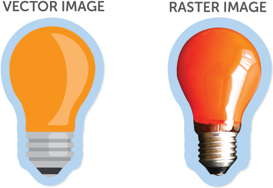
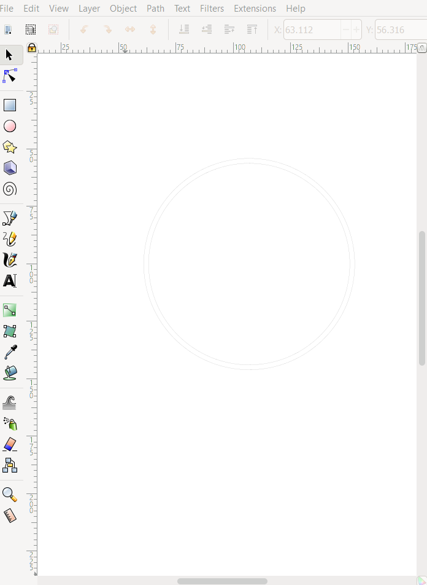
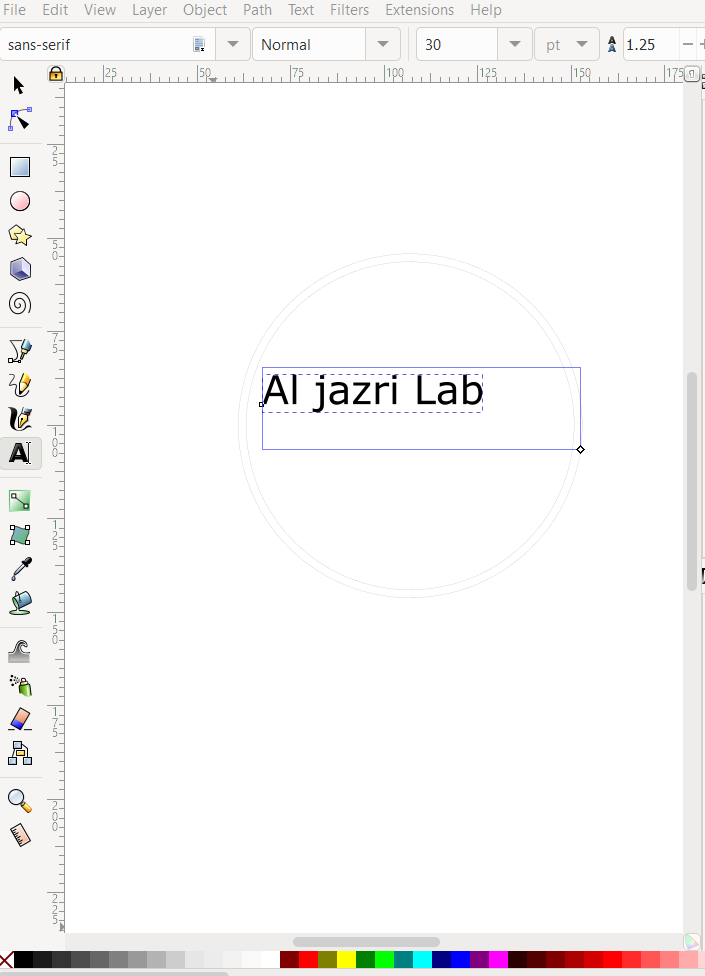
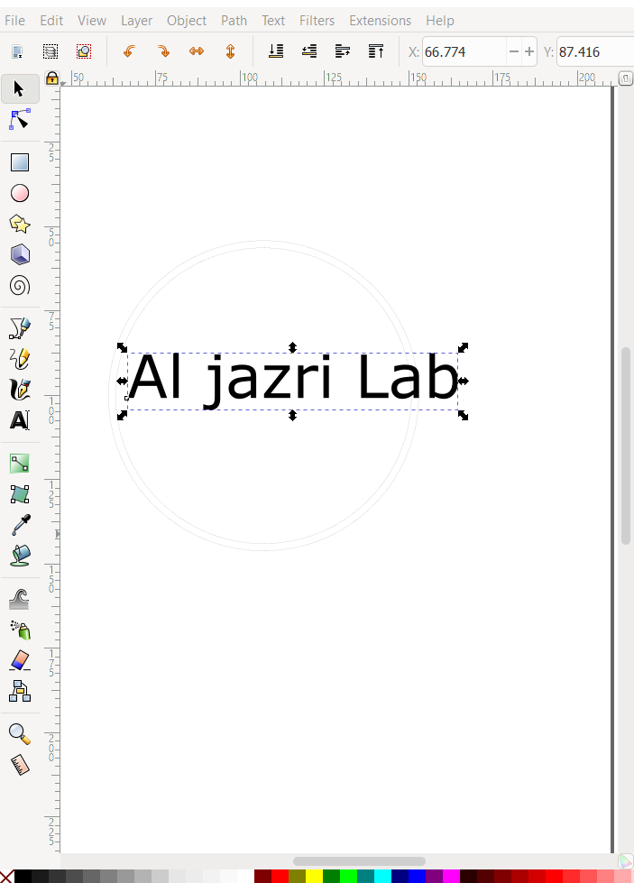
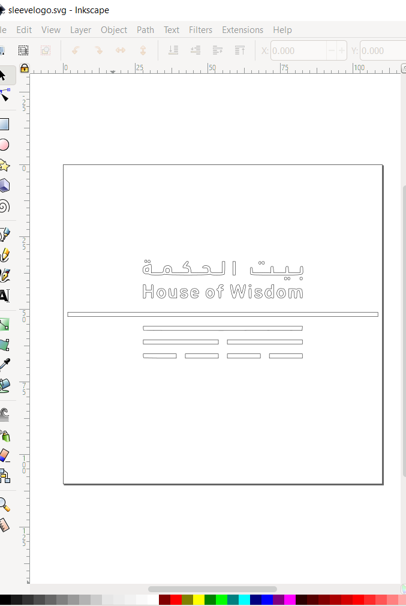
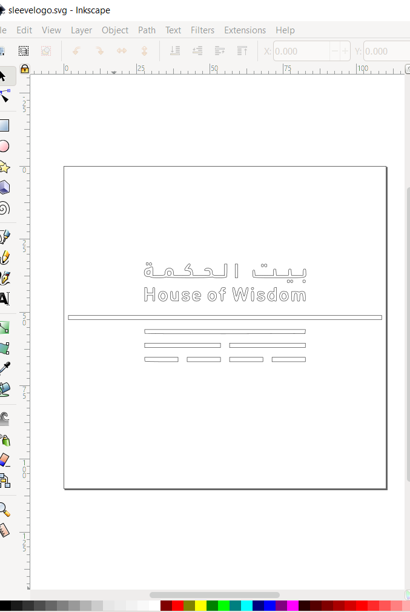

DAY 2
Today's learning objectives:
1-Basics of photoshop, using inkscape
2-How to use a vynil cutter
3-Mistakes I made so you dont have to
There are two types of image- vector and rostar. A look at the picture next to us will give you a preliminary idea on what the difference between them is.
Now zoom in to each of the pictures are much as you can, the rostar picture will get pixelated, whereas the vector picture always maintains a smooth appearnace, this is because vector images an artwork made up of points, lines, and curves that are based upon mathematical equations, rather than solid colored square pixels.
why does this matter? Well, vinyl cutters only cut vector images.
Inkscape is an open source (meaning free) graphics software. We are going to start by downloading the app.
Click here to go to the Inkscape website

After downloading, open the app and have a around, and lets
start by adding random shapes
Now we will go over a very important concept- stroke and fill. Fill of the shape is the filling and stroke is the line. To use a vinyl cutter, you need to have no fill, only the outline or stroke. You can change stroke and fill setting by going to "object".
Other useful tools are union, inset, offset and group. You can see these in the "path" and "object" tabs. There are many tutorials on youtube on how to use all these tools.
My first project was to make a sticker to put on a shirt. We used a heat transfer vinyl sheet. My design promt was the lab I'm working in, so I decided to mkae a logo! When i think of "logo" I think circles, so I began by drawing a circle, then duplicatimg it and using the inset tool to make two concentric circles like shown below, then I added some text.
  Then I looked up Technology clip art and downloaded this:

This however, is a rostar image. We can convert to ector using a very handy tool
in "path". You select the image, go to path ----> trace bitmap
and there ypu have it. Our final logo.
Here is the inkscape file for my logo!
Then, I made a sleeve logo using our handy trick, I looked up house of wisdom logo (the library I'm working in), took this picture, then path---> trace bitmap.
 

inkscape file for slevelogo 2-How to use a vinyl cutter
Something we forgot to do in the begginning was to test out machine.
Always do a test first.
The pictire on the left is what happened because
we forgot to test the pen force and
the one on left is what was supposed to happen.
Always test your pen force!
Points to talk abtme; Black n white, stroke and fill,some useful tools, how to pirate pics, sensors and setting an origin point how to peel off sticker
Here is a helpful video: